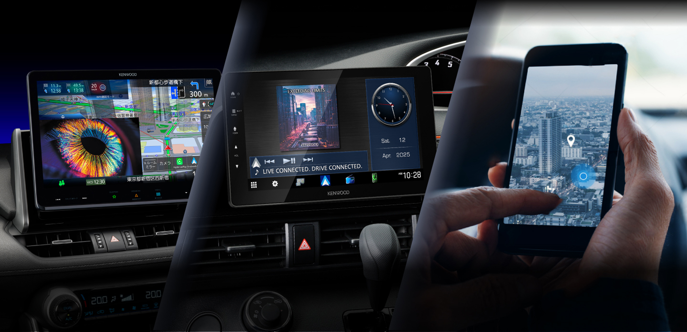
あなたの使い方にぴったりなのは？
どれを選べばいい?
今のクルマ選びでは、ナビゲーションにもいくつかの選択肢があります。
スマホを使ったナビアプリ、スマホ連携型のディスプレイオーディオ、そして専用のカーナビ。
どれも便利、けれど使うシーンや目的によって"快適さ"や"安心感"は大きく変わります。
あなたに合うのは、どのスタイルでしょうか？
あなたのドライブスタイル診断
＼どんなシーンでクルマを使っていますか？／
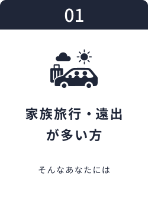
▼
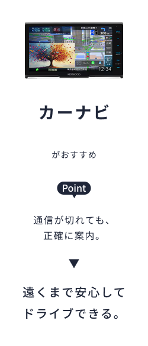
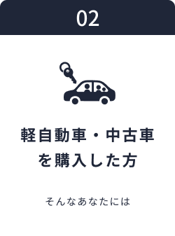
▼
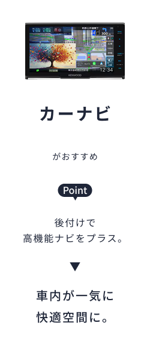
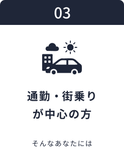
▼
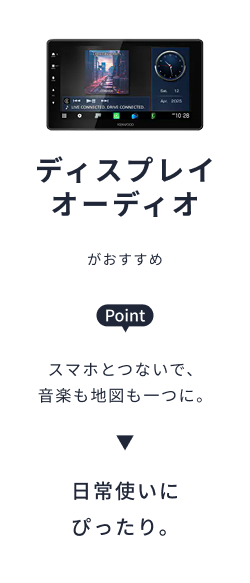
KENWOODならあなたにぴったりの一台が見つかる。
カーナビ /
ディスプレイオーディオのちがい
どちらもKENWOOD。けれど、求める快適さは人それぞれ。
あなたのドライブスタイルにぴったりなのは、どっち？
⇐ 見てわかる、2つのちがい ⇒
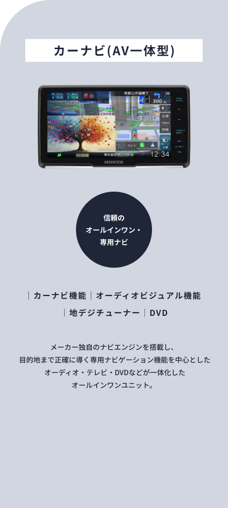
カーナビ(AV一体型)をお探しの方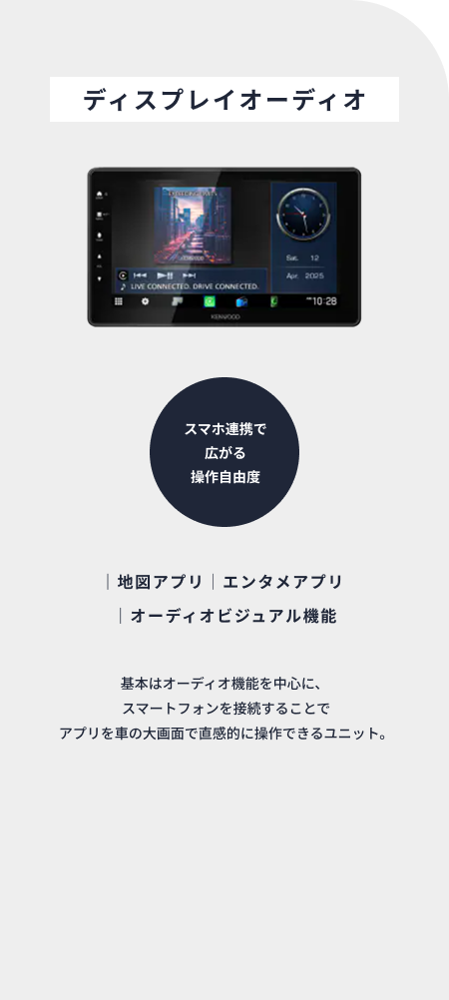
ディスプレイオーディオをお探しの方
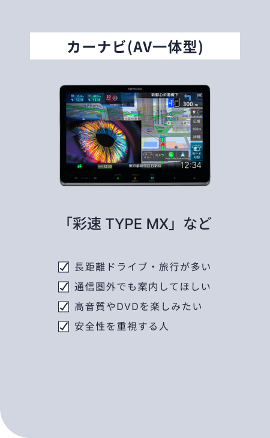
カーナビ（AV一体型）をお探しの方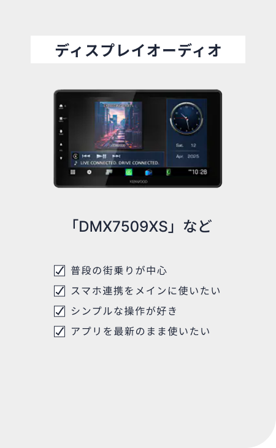
ディスプレイオーディオをお探しの方あなたに最適なモデルを見つけよう
選択肢が多いからこそ、迷ってしまう。
そんなあなたのために、KENWOODがナビします。
特長
"彩速ナビ"最上位となる10V型 フローティングモデル。
業界初の Mini LED バックライト採用ディスプレイ「ダイヤモンドアレイディスプレイ」を搭載し、高輝度かつ高コントラストを実現。
おすすめポイント
10インチ × Mini-LEDで地図も映像も驚くほど見やすい。
ナビ・音楽・映像・スマホ連携が1台で完結する最上位オールインワン。
音声操作や高速レスポンスで、運転中もストレスなく使える。
特長
9V型の最上位フローティングモデル。HDパネル＆広視野角を採用し約2.4倍の高解像度を実現。
さらに高精度3Dジャイロセンサーによる測位精度の強化や、HDMI入力／ハイレゾ対応など、プレミアム体験を追求した仕様。
おすすめポイント
"とことんこだわる"音質・映像・案内性能を求める方に。
高級車・グレードアップ車両に合う、上質なナビを探しているユーザーに。
大画面＋スマホ連携＋先進技術を全て欲しい、というドライブ体験重視派に。
特長
8V型サイズのフローティングモデル。HDパネル（1280×720）搭載、スマートフォン連携（Apple CarPlay／Android Auto）にも対応。
ナビ／AV／スマホ連携をバランス良く備えたミドルクラス。
おすすめポイント
「新車／既販車どちらにも取り付けやすい」モデルを探している方に。
画面サイズ・機能ともに"一歩上"を目指したいがあまり予算をかけたくない方向け。
スマホ使用が多く、ナビもあってほしいという"両立型ユーザー"に。
特長
7V型200mmワイドサイズという、コンパクト車や軽自動車への取り付けに適したモデル。
HDパネル搭載、スマホ連携対応、HDMI入力対応、音声操作対応など充実機能を備えます。
おすすめポイント
軽自動車やコンパクトカーを購入したり後付けしたりする方に最適。
「ナビも使いたいけれど、スペースや予算を抑えたい」方向け。
スマホ連携とナビ機能を"スマートに収めたい"ユーザーにおすすめ。
カーナビを選ぶなら「安定＋操作性＋安心感」
KENWOODのカーナビは、スマホ接続や電波状況に左右されない"信頼の案内"が強み。
さらにDVDスロット・高精度測位・地図更新サポートなど、
ディスプレイオーディオにはない「安心して任せられる機能」がそろっています。
特長
2025年モデルの9V型フローティングディスプレイオーディオ。
大画面HDパネル、ワイヤレス「Apple CarPlay／Android Auto」対応。
3D角度調整機構を備え、車内の見やすさ・操作性を高めた仕様。
おすすめポイント
車内の画面を“迫力＆視認性”重視で使いたい方に。
大画面で地図・アプリ・動画を見やすく。
スマホ連携をフル活用し、車内エンターテインメントも高めたい方に。
特長
2025年モデルの6.9V型インダッシュ型ディスプレイオーディオ。高精細HDパネルを採用し、ワイヤレス／有線で「Apple CarPlay」「Android Auto」に対応。
HD 1280×720表示・スマホミラーリング・HDMI入力など機能が充実。
おすすめポイント
インダッシュ取付車両に自然に収まり、純正機からの置き換えを意識する方に。
スマホ連携機能を“ワイヤレス＋大画面＋高画質”で活用したい方に最適。
音質・映像性能も重視したいけれど、カーナビまでは必要ないという方に。
特長
7インチ／6.8V型ワイド画面を備えたディスプレイオーディオレシーバー 「Apple CarPlay」「Android Auto」対応、DVD／CD再生・USB／Bluetooth接続。
おすすめポイント
スマホアプリを車内の画面で直感的に操作したい方に。
DVD／CDも使えるので、スマホだけでは物足りない方にも安心。
ディスプレイオーディオを選ぶなら「自由＋快適＋拡張性」
KENWOODのディスプレイオーディオは、スマートフォンとシームレスにつながる「拡張する楽しさ」が魅力。
お気に入りのナビアプリや音楽アプリを、車内の大画面でタッチ操作。
まるでスマホをそのまま車に載せたようなスマート体験を実現します。